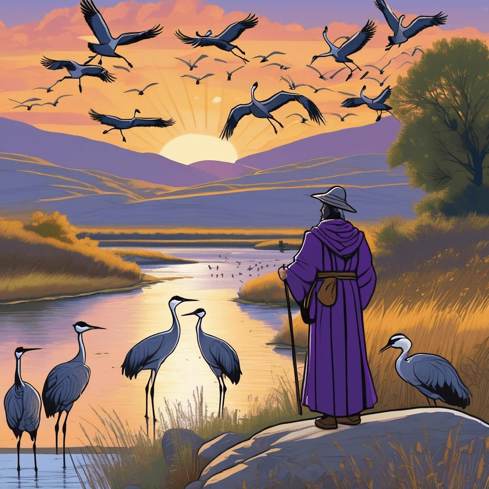
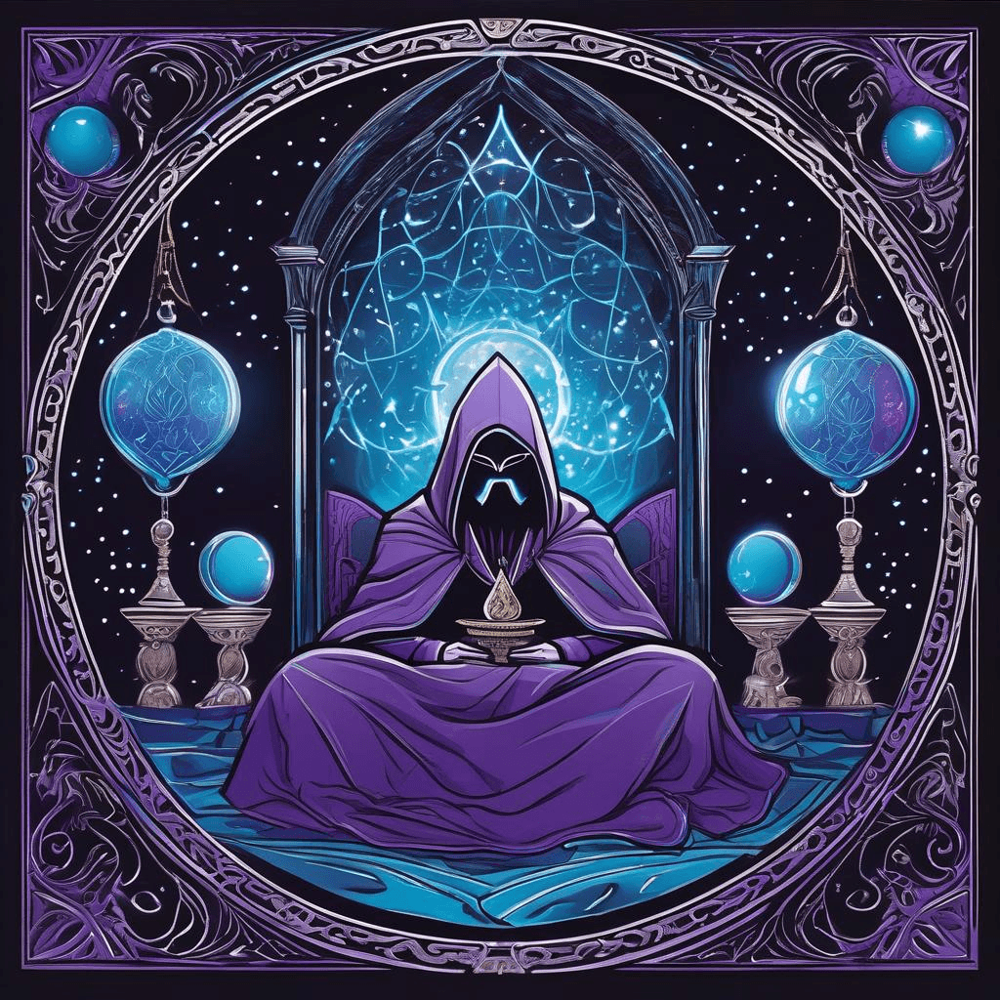
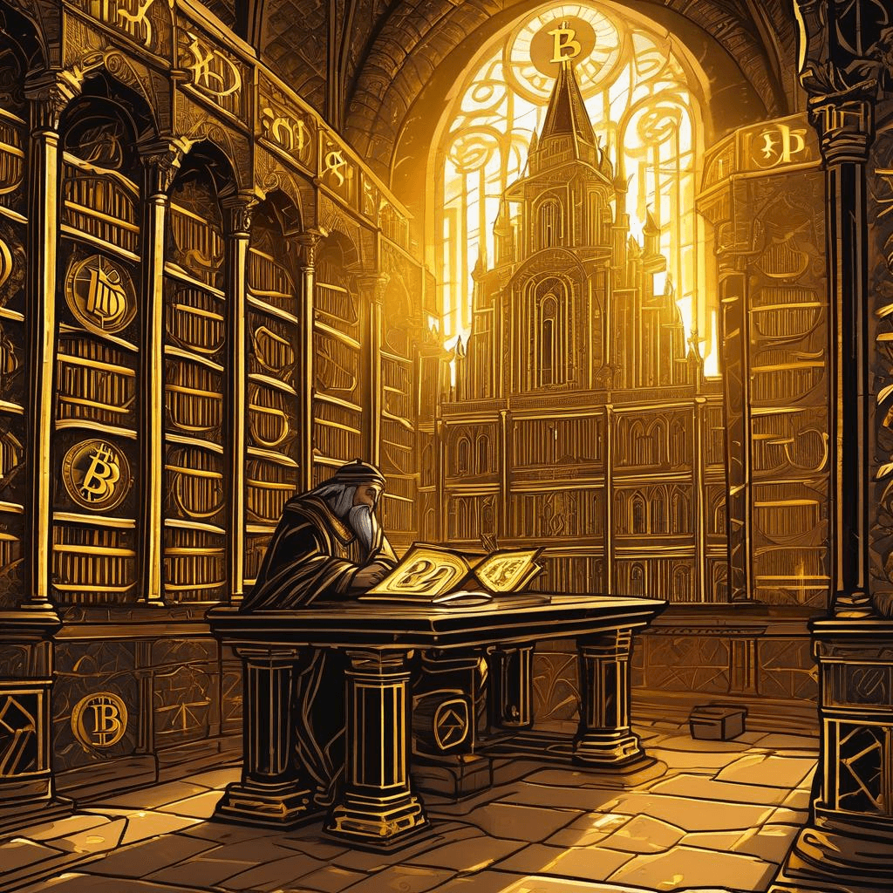

Chronicle Entry
February 14, 2026
Upon this Most Auspicious Fourteenth Day of February, in the Year of our Lord Two Thousand and Twenty-Six, Grand Magus Alistair emerges from his tower to witness the great spectacle unfolding across the Central Kingdoms! Mine brethren in the neighboring Kingdom of Nebraska report that nigh half a million of the Great Sandhill Cranes have descended upon the River Platte, staging their magnificent northern pilgrimage. What a sight these noble birds present, and methinks it shall not be long ere our own Kingdom of Dakota welcomes similar migrations. Speaking of noble pursuits, the Coyote Campaign continues unabated across our realm, requiring neither permit nor tribute to the bureaucratic scribes, three hundred and twenty days yet remaining for warriors to test their skills against these cunning adversaries!
Yet most disturbing news reaches mine ears from the realm of sleeping enchantments! A so-called intelligent sleep mask, crafted by modern alchemists, doth broadcast the very brainwaves of its wearers to open channels where any scrying wizard might observe them! What manner of fool would willingly permit such invasion of their nocturnal consciousness? Tis yet another reminder that not all innovation serveth the cause of individual liberty, dear subjects. Sometimes the old ways, a simple cloth over thine eyes, prove superior to these supposed marvels.

✨ Sandhill Crane Migration Spectacle
On more fortunate tidings, the mystical golden tokens of Bitcoin have reached the most auspicious value of sixty-nine thousand, seven hundred and thirteen pieces of traditional currency! The ancient wisdom of decentralized value storage continues to manifest its power, free from the machinations of central banking sorcerers who would debase our coin through endless conjuration of new currency. Truly, the free market knoweth best when left to its own devices.
Mine apprentices discovered a wondrous new repository of wisdom called Ooh Directory, wherein one might locate chronicles and treatises penned by learned scribes across the digital aether. Tis refreshing to find pathways through the information wilderness that connect true craftsmen of the written word, rather than the algorithmic gruel served by the great platform monopolies! Perhaps I shall submit mine own chronicles for inclusion amongst their honored ranks.

✨ Cursed Sleep Mask Scrying
Thus do I remind thee, dear subjects, that whether pursuing the crafty coyote across frozen plains or seeking knowledge through properly curated directories, the path of individual excellence requireth both ancient wisdom and selective embrace of modern tools! Stay vigilant, stay free, and trust not any device that broadcasteth thy dreams to strangers!

✨ Bitcoin Golden Treasury Triumph